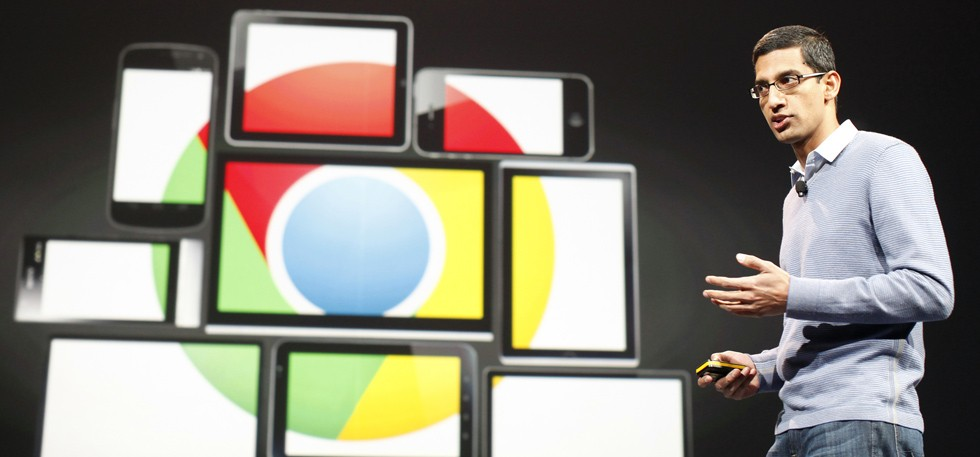

Google Will Release New Laptops And Tablets That Will Be Running An Entirely New Operating System
Google is currently working on a new laptop and new tablets that will be ditching the Chrome operating system and which will fuse salient features from Chrome with Android and dub it as the Andromeda operating system. The new operating system will be available on the new Huawei Nexus tablets that will probably be replacing the Google Nexus 7 successor. It is rumoured that the tablets will carry on the Nexus branding as Google is rumoured to be announcing their new Pixel phones.
The laptop is said to have a 12.3-inch touchscreen and is no thicker than 10mm which will make it the worlds thinnest notebook. According to Android Police, The laptop will be called Pixel 3 and it will also have a convertible design much like the Yoga laptops by Lenovo. The notebooks are also said to have glass trackpads which will be very similar to the MacBooks. The laptops are rumoured to be priced at INR 60,000.
This idea of merging Android and Chrome OS sure sounds like a great idea, but will it be able to integrate both platforms fluidly or not is remained to be seen. Although it seems like the integration will be more synonymous across all types of Google devices much like how Apple and Microsoft do it with their platform.
Andromeda is scheduled to launch soon but nobody seems to have an idea when. Google is already rumoured to launch new Pixel Phones, Home Speakers, a chromecast that supports 4k and HDR and a new Wi-Fi router.